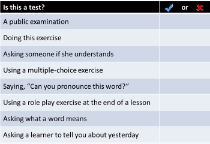
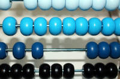
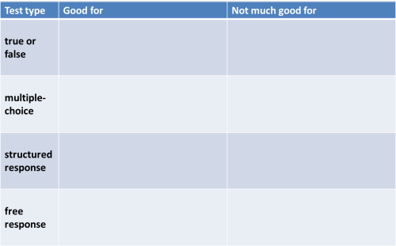

Testing in the classroom: an essential guide

You teach a child to read, and he or
her will be able to pass a literacy test.
George W. Bush
Testing is a complex and technical area which is littered (some might say infested) with terminology. There is a fuller guide to the area in the in-service section (most of which you don't need to know for the purposes of testing in the classroom).
 |
Defining terms |
Which of following do you see as a test? Click on the table when you have an answer.

Trick question?
No, not really. The point is that any of these activities can be
seen as a form of testing. You are asking
questions or setting tasks to find something out about the learners'
abilities.
We can take them one at a time:
- a public examination
- This sort of test is instantly recognisable to most of us. It is
usually a very formal procedure with strict rules for its conduct.
The obvious examples are tests such as IELTS, Cambridge First Certificate (and the other levels in that suite) and so on. - doing that exercise
- In this case, the exercise is only marginally a test because the only person who will look at the result is you. However, in a classroom, you might set a task like this to find out what people already know. In this case is was not a test but an awareness-raising activity to get you thinking.
- asking someone if she understands
- this is a kind of test but it's a pretty poor one because the answer won't tell you a great deal. Learners from a range of cultural backgrounds will normally respond positively to a question like this because that's the least threatening thing to do. A test to avoid.
- using a multiple-choice exercise
- You may be using such an exercise as a teaching tool, to alert people to the range of choices, for example. However, most learners will see it as some kind of test and the outcomes will, presumably, be evaluated in some way. So it's a test.
- saying, "Can you pronounce this word?"
- This is a test if you want to hear the learner pronounce it rather than being satisfied with an answer like "Yes, thanks" or a nod.
- using a role play exercise at the end of a lesson
- The purpose of activities like this is twofold:
- they give the learners an opportunity to use the language in a
freer way and make it a bit more personal to them
but - they also allow you to discover if they can actually use it in the way you hoped.
- they give the learners an opportunity to use the language in a
freer way and make it a bit more personal to them
- asking what a word means
- This is clearly a test. You want to know if the person knows the word or not. Be aware, however, that giving an off-the-cuff definition of a word in a foreign language is very challenging (that's what keeps dictionary writers in business). It's perfectly possible to know all you need to know about a word and still not be able to give a neat, clear definition of it.
- asking a learner to tell you about yesterday
- This may just be a bit of social chit-chat but in a classroom, many learners will assume they are being tested and their production evaluated. Good teachers will be listening carefully to see how well the learner can do this.
Some terms to help us think |
If almost everything we do can be seen as some sort of test, what are the differences? The following is not meant to bamboozle you with terminology but to sort the wood from the trees and help us focus. There are only four terms to grasp and they are pretty self-explanatory.
Can you make a stab at what any of these mean?
- formal testing
- informal testing
- formative testing
- summative testing
Click here when you have an answer.
- formal testing

this is what public examinations are but also what end-of-week or end-of-course tests usually are. They have these characteristics:- formal tests are very often written
- formal tests are not frequent
- formal tests are usually quite objective (or appear so)
- formal tests often have a set marking scheme (two marks for this, three for that etc.)
- the results are communicated to the learners
- learners recognise such tests for what they are and respond accordingly, i.e., they take them seriously
- informal testing

happens frequently in classrooms and informal tests have the following characteristics:- they can be anything from a simple question to a complicated role play
- they require the teacher and the learner to evaluate rather than assess by recording marks
- they do not rely on outcomes being given to the learners although feedback is often supplied somehow
- formative testing
can be formal or informal and is designed to aid the learning process by:- telling the teacher what has been learnt well so far and what needs more work
- focusing learners on what needs to be mastered
- being often quite frequent and done at the beginning, in the middle or at the end of lessons or a series of lessons
If you get lost, call me and I'll come and get you
At the beginning of the lesson, you show a short video clip of someone on the telephone giving directions to her house. In it, she uses expressions such as:
If you see the post-office on your left, you have gone too far
If you can't see the turning, look for the sign to Margate and follow that
etc.
You provide a test of their comprehension by asking some simple True / False questions such as
The visitor should look for a sign to Ramsgate
The visitor should turn right at the post-office
etc.
to see how much they can understand already and evaluate their ability to understand the meaning of if-clauses. From what emerges, you amend the lesson plan accordingly. - summative testing

is what happens at the end of a process and is designed to discover, for you and the learners, how well the targets have been learned. Examples are:- a public examination
- an end-of-course written test
- a final speaking exercise in a lesson
- homework tasks
They bring in their work and you spend a few lessons going through model / correct answers to the tasks so everyone can see how well they did and, even more importantly, how well they are prepared for the real thing.
It is, of course, not always so clear cut. Tests can be:
- formative and formal
- end-of week tests
written homework to be handed in and marked etc. - summative and informal
- tasks set at the end of lessons to see what progress has been
made
end-of-course activities which combine many aspects of what has been learned / taught - summative and formal
- end-of-course tests
public examinations - formative and informal
- checking understanding (Can you tell me what John said?)
checking pronunciation (Where's the stress on this word?)
checking grammar (What's the past of 'go'?)
The last of these is very frequently done because informal,
formative testing goes on all the time in classrooms:
whenever a teacher is asking a question and whenever a teacher is
listening to the learners' production or reading what they have
written, informal, formative testing is happening.
A graphical way of seeing this is like this. You can see
that both formative and summative testing can be either formal or
informal.
The bottom row contains examples only.

Try this little test to see if you have a handle on all of this.
 |
Informal testing |
Good informal testing is something that comes with training and
experience. It's not rocket science and one of the best ways to do
it is to listen carefully to your learners and ask questions which
target what you need to know.
For example, simply asking:
Do you understand the word
industrialised?
is going to elicit some information (often what the learners thinks
you want to hear) but it will need some expansion along the lines of:
Can a person or an animal be industrialised?
Can a country or a city be industrialised?
Is it a verb or an adjective?
What's the noun?
Is Greenland an industrialised country?
What about Britain?
What places in your country are industrialised?
Why do you say that?
and so on.
There's more on this in
the guide to checking learning and
the
guide to asking good questions, both linked below.
What follows concerns more formal, often written, testing.
Although it is unlikely that you will be asked to design a very
formal examination for your learners, teachers are often required
(or want) to design a test which will either be summative and tell
you and the learners how well the course has helped them to learn or
formative which will tell you and the learners what has to be
recycled and developed.
It is in this area that some knowledge of the principles of
constructing a good test is helpful.
 |
Formal testing |
Validity
This is a term you will often hear applied to testing. It means three things:
- Does the test measure what we say it measures?
For example, if we set out to test someone's ability to participate in informal spoken transactions, do the test items we use actually test that ability or something else? - Does the test contain a relevant and representative sample
of what it is testing?
For example, if we are testing someone's ability to write a formal email, are we getting them to deploy the sorts of language they actually need to do that? - Does the test look like a proper test?
You want your learners to take it seriously so presentation is important.
Simple. Of course, we want our test to be valid so here's a short guide to how to write a good test.
The test can be formative (in the middle of a course or even a lesson) or it can be summative (coming at the end of a course or series of lessons).
The process:

 |
Deciding what to test: prioritising and organising |
This is where good record-keeping comes in handy. Briefly, this means
- looking back and selecting the areas you think need testing. You won't be able to test everything (unless you have taught very little) so
- prioritise the list to make sure you are being fair to all your learners. They will better at some skills than at others so mix it up.
- now break the list down into skills (reading, writing, speaking, listening), grammar and structures, pronunciation and lexis
Selecting test items and working out how to mark the test |
Now you have your list, you can decide how to test the items.
Types of tests
- true or false
- This called an alternate-answer test. You can expand it slightly
to include True, False and Don't know (the answer isn't in the text).
For example:
In the list above there were three factors concerned with Validity:
True: O
False: O - multiple-choice
- This is sometimes called a fixed-response test. Typically,
the correct answer must be chosen from three or four alternatives.
The 'wrong' items are called the distractors.
For example:
Choose the best answer:
Summative testing is designed mainly to:
A: help the learning process
B: plan the rest of a lesson
C: focus the learners on what they need to learn
D: find out how well something has been learnt - structured response
- In tests of this sort, you give a structure in which
to form the answer. Skeleton sentence items of the sort
which require the subject to expand a sentence are tests of this sort.
For example:
Use the words here to make a correct English sentence:
He / come/ my house / yesterday / 9 o'clock
______________________________________________________
(Answer: He came to my house at 9 o'clock yesterday Yes, we had to move the time phrases around.) - free response
- In these tests, no guidance is given other than the instructions
(called the rubric, incidentally) and
the learners are free to write or say what they like. A hybrid
form of this and a structured response item is one where the subject
is given a list of things to include in the response.
For example (free response):
Write 200 words about a good holiday experience.
For example (hybrid):
Write 200 words about what method of transport you prefer
Say:
What it is and when you last used it
Why you like it
List three advantages
List two disadvantages
Finish with a recommendation
These sorts of tests can also be done orally.
For example (free response):
Tell me about the last film your saw.
For example (hybrid):
Ask your partner about his last holiday and find out:
where he went
who he went with
what he enjoyed the most and the least
Have a look at this graphic and decide what goes in the columns on the right. Then click on it to compare your answers.

 |
Some more examples |
| Data | Task | Comment | |
| 1 | A text about
someone's hobbies and interests. For example, I much enjoy walking and reading but have little time for sports and outdoor games which are just too energetic for me now that I'm getting on a bit. I don't watch much television these days because I find it all rather dull and depressing. |
The writer
states that she used to do a lot of sports. True or False? |
The longer the
text and the more complex the sentence structure, the harder it
is. The more the reader has to read between the lines, the harder it is. |
| 2 | The same as above. | Choose the
best answer: a) She has never watched television much b) She dislikes depressing television programmes c) She never went in for outdoor activities d) She has never played sports |
The nearer the
distractors are to the truth, the harder it is. The more different the words in the question are from the text, the harder it is (see c)). |
| 3 | She / sports / now / she / getting | Expand the sentences making the necessary changes | You usually need a
bit of context to get reliable responses. With the text
above, the response should be: She doesn't play much sports now because she is getting on a bit. |
| 4 | She _______ play _______ many ________ as she _______ to. | Fill the gaps with a single word. | This is sometimes called a Cloze test although it isn't technically. A better term is a gap-fill test. |
| 5 | Same text as above. | Now write a similar paragraph about your hobbies and interests using the text as a guide. Write no more than 150 words. | This is a hybrid between free and structured response. |
 |
Marking tests: reliability |
Some of those test items require more judgement by the
marker (usually you) than others.
The more subjective the marking is, the less reliable will be the
results. For example:
- Item 1 and 2 are either right or wrong so easy to mark but remember that you can get 50% by guessing in item 1, and 25% in item 2. You can also get it right even if you don't understand most of the text.
- In item 4, would you accept She didn't play so many games as she wanted to when what you actually wanted was She doesn't play as many sports as she used to? To get round the problem, you can give the learner a selection of words to choose from but that makes it easier, of course. The same issue arises with item 3.
- Item 5 demands most of the marker because you will have to
assess against a range of criteria, such as:
- use of lexis
- accuracy of grammar
- content
- ordering
- use of connectors
That's quite difficult to do and maintain fairness at the same time.
There are, of course, many more variants and types of test item than we can cover here. Look at tests in coursebooks and be aware that most examination boards and ELT publishers have examples of tests and test types on their websites. Go there for more ideas.
| Related guides | |
| testing | the fuller and more technical guide to this area in the in-service training section |
| asking good questions | for a guide to how to check learning and use formative, informal testing in the classroom |
| checking learning | a related guide to informal formative and summative assessment |
Of course, there's a test on all of this: some formal, summative evaluation for you.
Reference:
A very accessible and clear text is:
Hughes, A, 1989, Testing for Language Teachers. Cambridge: Cambridge
University Press